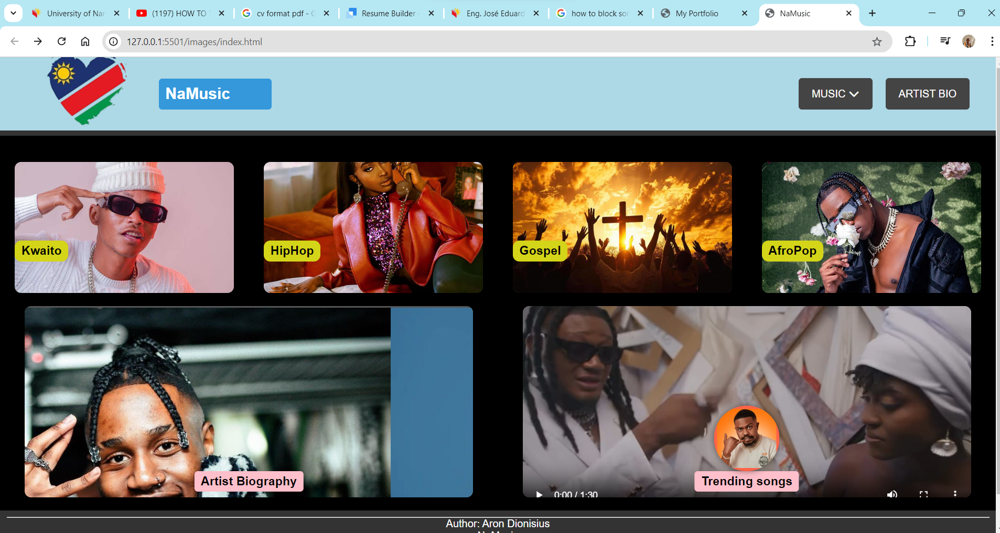
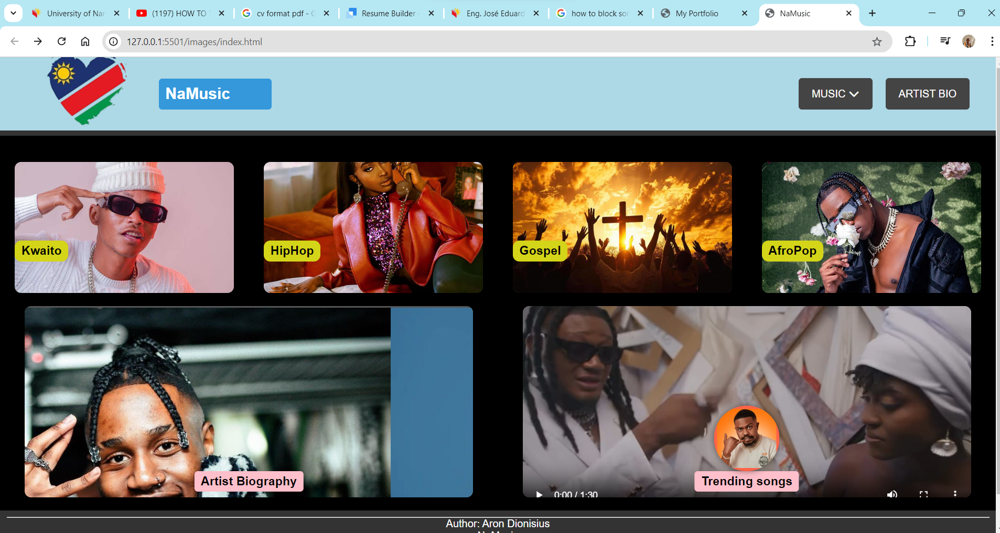
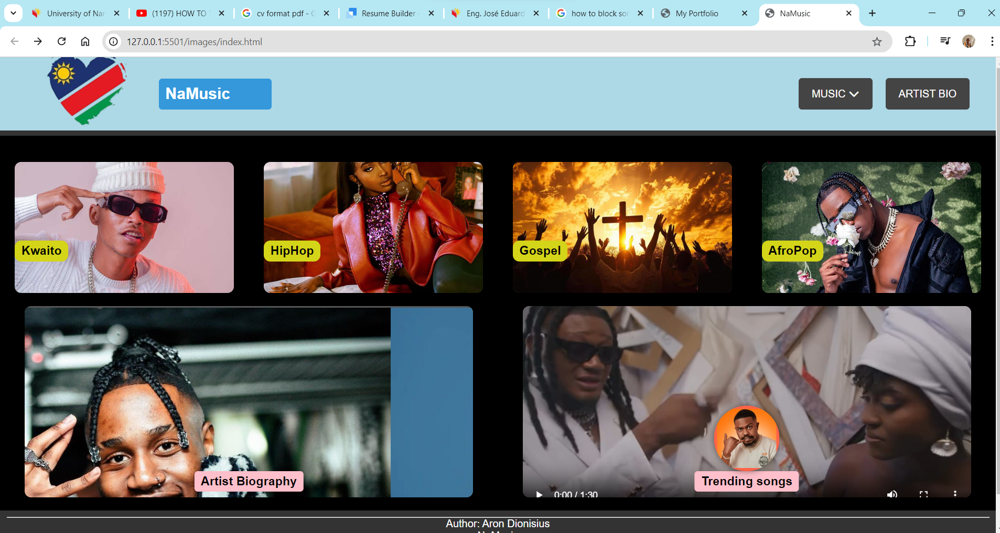

Project Screenshots
 

This project involves the creation of a dynamic website dedicated to streaming Namibian music. The website offers a vibrant and engaging platform for users to explore and enjoy a diverse collection of Namibian music tracks.
**Features:** - **Music Streaming:** Users can browse through a curated selection of Namibian music and stream their favorite tracks directly from the website. - **User Interface:** Designed with a clean and intuitive interface, the website ensures an easy and enjoyable browsing experience. The layout highlights Namibian artists and genres, making it simple for users to find and listen to music. - **Audio Integration:** Utilizes advanced audio playback functionality, allowing users to play, pause, and skip tracks seamlessly. - **Responsive Design:** The site is fully responsive, ensuring a smooth experience across various devices, from desktops to mobile phones.
**Technologies Used:** - **Frontend:** HTML, CSS, JavaScript - **Backend:** Node.js (for handling audio files and user requests) - **Design:** Custom styling and layout to reflect the cultural essence of Namibian music
